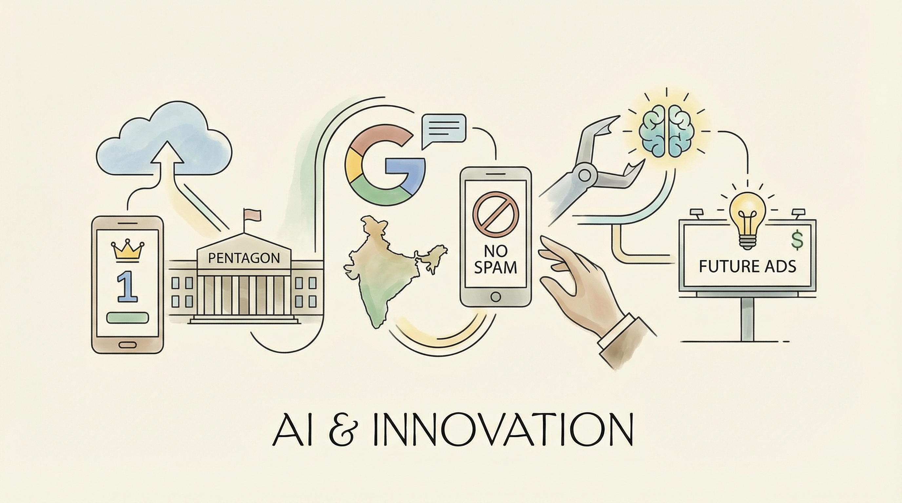

Anthropic的聊天机器人Claude在五角大楼争议后App Store排名上升至第一。
两克伴AIGC日报
2026-03-02 星期一

本期关注：Anthropic的Claude在五角大楼争议后跃升至App Store榜首、谷歌寻求解决印度长期存在的RCS垃圾邮件问题——但并非独自应对、OpenClaw 创始人加入 OpenAI：遇见广告的未来 - 媒体邮报、展示HN：Agentchattr - Claude Code / Codex / Gemini CLI的本地聊天室
📰 行业动态
谷歌与Airtel合作，在印度加强RCS的垃圾邮件过滤。
OpenAI创始人加入，探讨广告AI代理的未来。
🔥 今日焦点
标题：Show HN：Agentchattr – Claude Code / Codex / Gemini CLI 的本地聊天室
简介：
Agentchattr 是一款由开发者 bcurts 打造的本地聊天室工具，旨在解决在使用多个 AI 代理 CLI（如 Claude Code、Codex 和 Gemini CLI）时，频繁需要在终端之间进行复制粘贴的问题。该工具通过运行一个本地的 FastAPI MCP 服务器，并搭配浏览器聊天界面，实现了不同 AI 代理之间的协同工作。
近日，Reddit用户u/jack_smirkingrevenge成功逆向工程了苹果神经引擎（ANE），并将其应用于训练Microgpt模型。此举源于作者购买了一台Mac mini M4，希望利用其计算能力为其编译器项目训练Metal（GPU）。由于ANE是一个黑盒，苹果并未公开其细节，因此作者利用Claude工具逆向工程ANE的私有API，绕过coreml（推荐使用ANE的方式）进行基准测试。结果显示，该NPU具备38 TFLOPS的INT8计算能力（但实际计算能力为FP16的一半）。最终，作者创建了一个定制化的训练流程，训练了一个小型110M的Microgpt模型。
这一成果对AI领域具有重要意义。首先，它揭示了ANE的内部机制，为研究者提供了深入了解和利用ANE的途径。其次，该研究展示了NPU在训练小规模模型方面的潜力，为未来在芯片上训练更大模型提供了理论支持。尽管实际应用中无法在单个芯片上训练更大模型，但理论上，通过集群部署可以训练更大规模模型。此外，NPU在低功耗、高性能方面的优势，为AI领域的研究提供了新的思路。
近日，在Reddit上，用户u/Windowsideplant发布了一篇关于Qwen3.5 35b a3b模型的测试报告。该模型在处理长文本推理任务时表现出色，成为首个在总结50k token文本时不会产生幻觉的小型模型。在之前进行的测试中，包括Qwen3 4b 2507、Nanbeige4.1 3b、Nvidia nemotron nano 4b、Jamba reasoning 3b、Gpt oss 20b以及Qwen3 30b a3b等模型均未能避免在总结过程中添加原文中未出现的额外内容。而Qwen3.5 35b a3b模型则成功避免了这一问题，这对于AI领域具有重要意义。
这一发现的重要性在于，它揭示了当前AI模型在处理长文本时的局限性，并指出了Qwen3.5 35b a3b模型在这一领域的突破。这对于AI领域的影响主要体现在两个方面：首先，该模型的成功为长文本处理提供了新的思路，有助于提升AI模型在自然语言处理任务中的表现；其次，这一突破有望推动AI模型在生成文本、机器翻译等领域的应用，从而为相关领域的研究和发展带来新的机遇。总之，Qwen3.5 35b a3b模型在长...
📚 深度长文
本文深入探讨了Anthropic与五角大楼在人工智能领域的竞争与合作。作者Alberto Romero指出，当前AI发展正步入类似曼哈顿计划的时期，其中Anthropic与五角大楼的对抗与合作成为焦点。文章首先分析了Anthropic的愿景与战略，强调其致力于构建安全、有益的人工智能系统。接着，作者对比了五角大楼在AI领域的角色，指出其在推动技术进步的同时，也面临道德与伦理的挑战。文章进一步探讨了双方在AI研究、应用及政策制定方面的合作与竞争，揭示了AI发展背后的复杂利益关系。阅读本文，读者将获得对AI领域最新动态的深入了解，以及对未来发展趋势的独特见解。
---
《Entropy：Essential AI Math Excel Blueprints》一文由Tom Yeh教授撰写，深入探讨了熵在人工智能领域的数学应用。文章核心观点在于，熵作为信息论的基本概念，对于理解数据复杂性和优化机器学习算法至关重要。Yeh教授通过一系列关键论据，阐述了熵在数据压缩、特征选择和模型评估等方面的应用。
文章首先从熵的基本定义入手，详细解析了其在信息论中的重要性。接着，Yeh教授展示了如何将熵的概念应用于Excel中，通过具体的数学模型和实例，揭示了熵在数据分析和机器学习中的应用潜力。文章不仅深入浅出地介绍了熵的计算方法，还探讨了如何利用熵来优化算法性能。
本文由Dr. Ashish Bamania撰写，深入揭示了AI行业隐藏在公众视野之外的黑暗面。文章以11张信息图表的形式，剖析了人工智能领域存在的诸多隐患和挑战。核心观点在于，尽管AI技术发展迅速，但其潜在的风险和问题却被行业有意或无意地掩盖。
文章通过详实的数据和案例，揭示了AI在隐私侵犯、算法偏见、就业冲击、安全风险等方面的严重问题。例如，AI系统可能因算法偏见而导致不公平的决策，甚至可能被恶意利用进行网络攻击。此外，AI的快速发展也引发了就业市场的动荡，许多传统职业面临被机器取代的威胁。
🛠️ 产品推荐
SwarmClaw是一款针对OpenClaw和AI智能体编排的仪表盘。该产品通过直观的界面，帮助用户高效管理智能体集群，实现自动化任务调度和协同作业。SwarmClaw的核心功能在于提供强大的编排能力，简化了复杂任务的执行过程。对于技术从业者而言，SwarmClaw能够显著提升工作效率，降低开发难度，助力构建高效智能的自动化系统。此外，SwarmClaw的AI智能体编排功能，更是将人工智能技术应用于实际场景，为用户提供创新的解决方案。
---
Nopp是一款基于AI的macOS应用程序，利用Claude或ChatGPT订阅服务，将销售演示文稿、引诱材料和提案等转换为互动式微网站。该产品通过AI技术，将用户输入的提示转化为包含表单收集、条件逻辑、评分卡、动画和内置观众追踪功能的微网站。Pro计划更增实时Slack提醒、AI驱动的互动洞察和信号智能分析。Nopp帮助销售团队高效制作和分发营销材料，提升客户互动和转化率。
---
Reflex是一款基于Rust开发的本地代码搜索引擎和MCP服务器，专为AI编码设计。它通过结合三叉索引、Tree-sitter符号提取和静态依赖分析，实现了快速、准确的本地代码搜索。相较于传统托管代码搜索工具，Reflex解决了基础设施开销大、索引更新慢、准确性受限等问题。MCP服务器是其核心功能，支持Claude Code等AI编码助手搜索代码库、查找符号定义、追踪依赖关系，极大提高了开发效率。